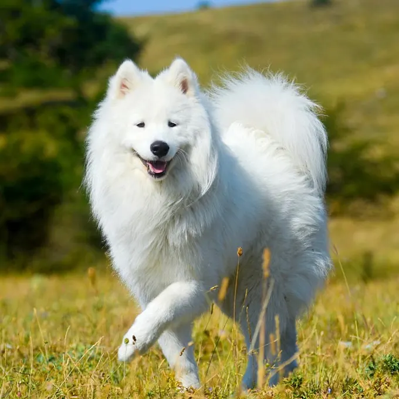
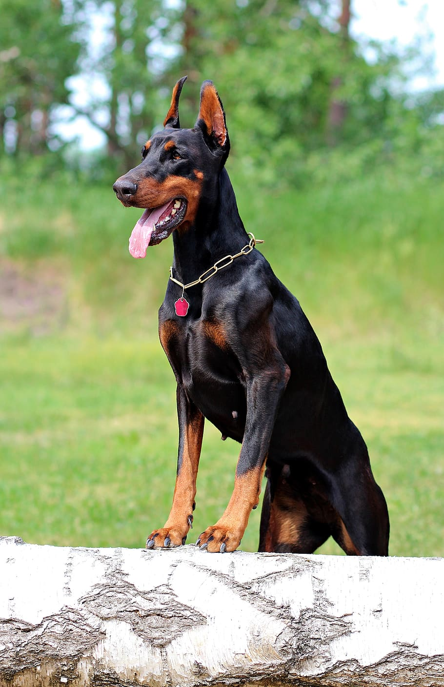

Razas Grandes
Son los más comunes como animales de compañía, son razas de perros adultos que pesan 25 kg o menos.
Provienen de una gran variedad de razas y diversas apariencias, cada uno de ellos con un carácter diferente
tienen una esperanza de vida de aproximadamente 15 años, aunque puede variar en el caso de cada perro,
y sobre todo, la talla que tenga.
Algunas razas y sus caracteristicas:
-
Samoyedo
- Esperanza de vida: 12-14 años
- Altura:55-70 cm
- Peso: 10-25 kg
- Su cuerpo es un poco más largo que alto,
pero compacto y flexible,La cabeza de este perro
tiene forma de cuña y guarda muy buena proporción
con el cuerpo. Sus orejas son erguidas, pequeñas,
triangulares, gruesas y redondeadas en las puntas.
Su aspecto es elegante, fuerte, resistente y agraciado.
-
Doberman
- Esperanza de vida: 12-14 años
- Altura:70-80 cm
- Peso:25-45 kg
- La nariz, más ancha que redonda, tiene grandes
fosas nasales grandes.Su cuerpo es compacto,
musculoso y poderoso